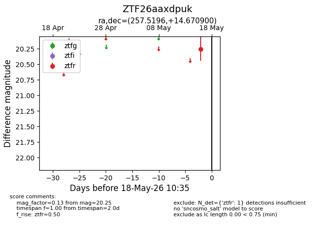
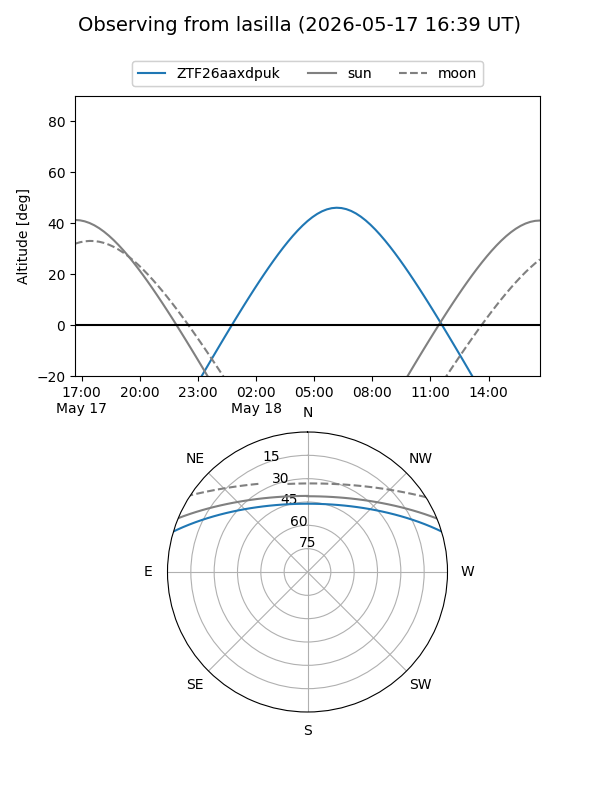
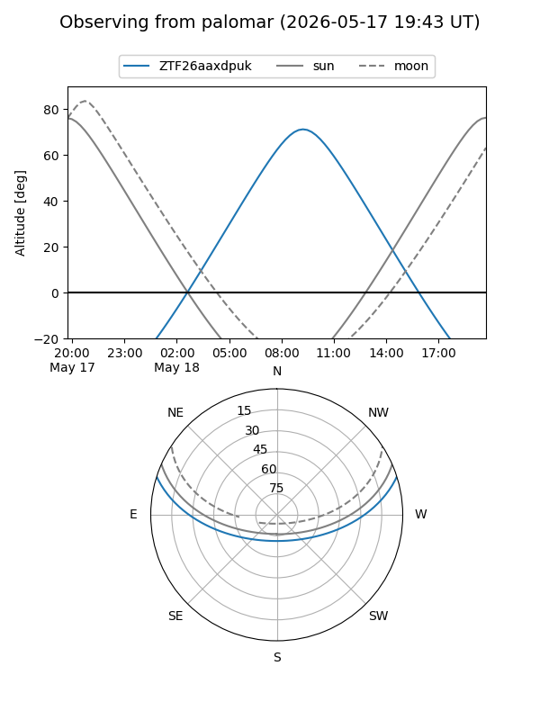

ZTF26aaxdpuk
Target ZTF26aaxdpuk at 2026-05-18 10:36
Aliases and brokers:
FINK: link
Lasair: link
ALeRCE: link
alt names
ZTF26aaxdpuk (ztf,fink_ztf)
Coordinates:
equatorial (ra, dec) = 257.5196,+14.67090
equatorial (HMS+DMS) = 17:10:04.71,+14:40:15.24
galactic (l, b) = (35.3298,+28.94499)
Flags:
Photometry:
last ztfr=20.25
1 ztfr detections
Lightcurve

Visibility


Additional plots